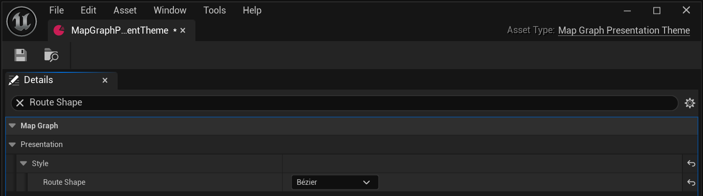
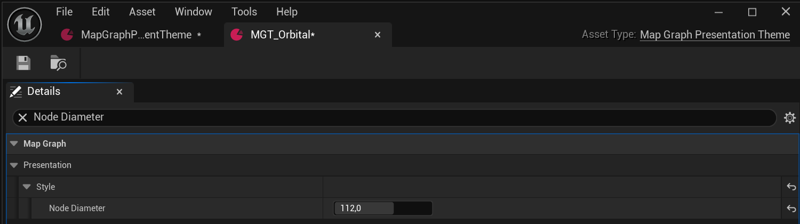
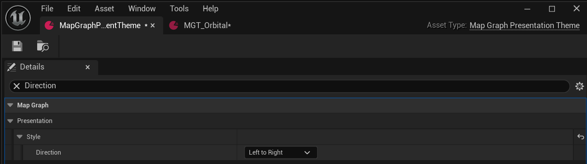

Editor and Blueprint quickstart
Install the matching engine version from Fab, enable Map Graph in Edit > Plugins, and restart when requested. A Blueprint-only project can use the installed plugin without adding a C++ project module.
- In your project's Content folder, create a Data Asset with class MapGraphNodeType. Set its display name, tags, optional icon and weight. Create a few types for your game's destinations.
- Create a MapGraphRules Data Asset. Assign start and end types, add your other types to Default Types, and configure the row layouts. Leave the edge policy defaults for your first connected map.
- Create a MapGraphPresentationTheme Data Asset. Click a preset button, then choose colors, icons, route shape and spacing.
- Create a Blueprint derived from MapGraphGameMode. In Class Defaults, assign Harness Rules and Harness Presentation Theme. Set Harness Widget Class to MapGraphWidget for map-only UI, or MapGraphDemoWidget for the destination placeholder and return flow.
- Open your level's World Settings, choose that Blueprint as GameMode Override, save, and press Play. Confirm that reachable nodes advance the route and that restarting restores the start.
Keep your rules, themes and Blueprints in project Content. Plugin updates can then replace plugin-owned examples without overwriting your customizations. Set your own level as both Editor Startup Map and Game Default Map in Project Settings > Maps & Modes before packaging.
Use your existing GameMode or HUD
Create a Widget Blueprint derived from MapGraphWidget or MapGraphDemoWidget, assign its Rules and Presentation Theme in Class Defaults, and use Create Widget > Add to Viewport in your existing UI flow. Set Game-and-UI input mode with the widget as focus and show the mouse cursor. Bind On Node Advanced to your gameplay entry point; it fires after a valid travel commits. The Blueprint workflows below describe graph ownership and route events.
Validate rules in the Editor
Open Window > Map Graph Viewer, select your rules, enter a seed and choose Generate. Generate Random displays the seed it used. Invalid rules explain the problem and preserve the previous preview. This viewer inspects data in the Editor; use the runtime widget in your game.
A complete graph core with a replaceable presentation
Map Graph is a native Unreal Engine code plugin for layered, directed progression maps. Its generator turns Data Asset rules and a seed into graph data. Its navigator validates movement through unlocked edges. The plugin provides a configurable native runtime presentation so the included example is immediately interactive while the underlying graph remains usable from any project UI.
Generate
Author rows, node pools, fan-out, route extras, and Gameplay Tag quotas as reusable assets.
Explore
Inspect routes and advance through reachable nodes with mouse, keyboard, controller, or touch.
Integrate
Use the Game Instance subsystem, Blueprint helpers, delegates, or direct C++ APIs.
Runtime module: MapGraph
- Seeded generator, graph data, queries, and navigator
UMapGraphSubsystemfor shared graph and route stateUMapGraphWidgetnative responsive presentationUMapGraphPresentationThemestyling Data AssetUMapGraphDemoWidgetandUMapGraphDemoProfilefor a replaceable encounter example- Blueprint function library and layout helpers
- No-Tick example GameMode harness
Editor module: MapGraphEditor
- Dockable Map Graph Viewer
- Entered-seed and random-seed preview generation
- Editor-only
MapGraphTestcommandlet - No runtime dependency on the Editor module
Editable rules, node types, and a self-contained example map live
under /MapGraph/Example. The native screen has its own vector-glyph fallback and
does not require external fonts, images, UI packs, or host-project content.
Input and route interaction
The native screen uses one spatial focus model for every device. Moving focus updates the inspector. Confirming an unavailable future node does not travel; it shows an explanation. By default, future nodes may be inspected while travel remains restricted to reachable nodes.
The mappings below are the defaults. InputBindings exposes keyboard and gamepad
key arrays, analog axes and actuation/release thresholds, and the seed adjustment step without
requiring plugin edits. Mouse and touch remain direct interactions with visible markers and
controls. The stable behavior IDs are inspect-node, travel-to-node,
edit-seed, generate-from-seed, generate-random,
restart-route, and switch-style.
The left stick moves focus one node per deflection. Return the stick inside the configured release threshold before moving again; holding it does not repeat across the map.
| Action | Mouse | Keyboard | Controller | Touch |
|---|---|---|---|---|
| Inspect a node | Hover | Arrow keys or WASD | D-pad or left stick | Tap any marker; unavailable markers inspect without travelling |
| Travel to a reachable node | Left-click a reachable node | Enter or Space | Bottom face button (A on an Xbox-style layout) | Tap a reachable marker; dragging cancels the tap |
| Explore a scrolling map | Mouse wheel; left-drag empty paper or middle-drag anywhere on the map | Move node focus; the focused row scrolls into view | D-pad or left stick; the focused row scrolls into view | Drag the map without activating a node |
| Switch visual preset | Style preview button | T | View button | Tap the style preview button |
| Edit the displayed seed | Type in the Seed field or use -/+ | Focus the Seed field and type a value | Left/right shoulder buttons decrement/increment | Tap -/+, or use the platform text entry for the Seed field |
| Generate from displayed seed | Generate Seed button | G | Left face button (X on an Xbox-style layout) | Tap Generate Seed |
| Generate a random seed | Generate Random button | R | Top face button (Y on an Xbox-style layout) | Tap Generate Random |
| Restart the route | Restart Route button | Home | Menu/Start button | Tap Restart Route |
The playable harness hides seed controls by default. Enable
AMapGraphGameMode.bShowGenerationControls when you want the visible seed editor;
generation shortcuts remain available while map input is active. Scroll behavior requires
the style's bScrollToFitRows; style preview requires bShowStyleSwitcher.
Mouse dragging is enabled by default; turn off the widget's bAllowMouseDragScrolling
to reserve those mouse gestures for your own interface. A drag does not activate a node.
When visible, the footer help switches between mouse, keyboard, gamepad, and touch wording as the active input changes. Touch travel requires a same-marker press and release within the platform drag threshold; secondary touches, drags, capture loss, or a graph change cancel the activation. The widget restores map focus after generation, route advancement, and restart so directional navigation can continue.
The Seed field is a pending value shared by every input path. Typing, spinning, tapping -/+, or using the controller shoulder buttons updates that same value; the Generate Seed button, G, and the controller left face button all generate from it. A successful generation replaces the field with the graph's actual seed.
Pointer hit testing uses the presentation style's MinimumHitDiameter, which defaults
to 64 pixels. Keep it at least 48 pixels when adapting the theme for touch targets.
bAdvanceImmediatelyOnConfirm to false. The widget will validate that a node is
reachable and broadcast OnNodeActivated, but your project decides when to call
AdvanceTo. This is useful when travel first opens a confirmation, encounter, or
transition screen.
Reproducible seeds and Generate Random
A random layout is still reproducible. Every random-generation entry point creates a nonzero seed, stores it in the generated graph, and exposes it to the caller or visible Seed field.
| Entry point | Result |
|---|---|
| Editor Viewer > Generate Random | Updates the Seed field and generates the preview. |
UMapGraphWidget::GenerateRandom |
Displays the seed, resets presentation to the new graph, and broadcasts OnGraphGenerated. |
UMapGraphSubsystem::GenerateRandom |
Adopts the new graph, initializes navigation, and broadcasts subsystem change events. |
UMapGraphBPLibrary::GenerateRandomActMap |
Returns a transient graph; read Graph->Seed and retain the graph. |
UMapGraphBPLibrary::CreateRandomSeed |
Returns a nonzero int32 for a custom generation or persistence flow. |
GenerationVersion, rules asset path and values,
referenced node-type data, and plugin generation behavior. Save those dependencies or store a
full project-owned graph payload when a layout must survive rule edits and upgrades.
In the Blueprint convenience and subsystem APIs, seed 0 means
MapGraphSettings.DefaultSeed. Use UMapGraphGenerator::GenerateGraph
directly when zero must be treated as a literal seed.
Make the presentation yours
UMapGraphWidget is a UUserWidget backed by a native Slate presentation.
You can use it unchanged, subclass it in Blueprint, configure it per instance, supply a reusable
theme asset, or replace it while continuing to use the same subsystem and graph APIs.
Build a collection of examples
UMapGraphShowcaseWidget adds a compact selector to UMapGraphDemoWidget.
Keyboard keys 1 to 5 select the included examples directly; Page Up / Page Down or gamepad
left / right shoulder cycle through them. Tap a numbered button on touch screens.
D-pad or left stick inspect nodes, and the bottom face button enters a reachable node
or returns from its destination. Touch supports marker taps, map swipes and destination buttons.
Reset and New are available as buttons, Home / R keys, and gamepad Menu / top face button.
Duplicate MapGraphShowcaseProfile and assign it to the showcase widget. An unassigned collection loads the bundled profile on first use; GetShowcaseProfile returns the active collection.
Each entry has a name, description, seed, Rules and Theme.
Add, remove or reorder entries; there is no fixed example count. Edit ExampleKeys,
PreviousExampleKeys and NextExampleKeys to remap switching.
Selecting another example begins a fresh route and cancels any previous selection animation.
Selecting the active example keeps its route. Hide the selector with bShowExampleSelector,
or use UMapGraphDemoWidget for a single journey without the selector.
Quick setup for your game
- Create a
MapGraphPresentationThemein your Content folder, apply a preset, then choose your background, route style and marker settings. - Create or duplicate
MapGraphNodeTypeassets. Set each name, icon, tags and relative weight. Add as many categories as your game needs; the example's eight types are optional. - Create a
MapGraphRulesasset. Add your candidates toDefaultTypes, choose start/end types, and set rows, node counts, connection policy and optional per-floor pools. - Assign
RulesandPresentationThemeon your map widget. With the supplied GameMode, useHarnessRulesandHarnessPresentationTheme. - Open your gameplay from
OnNodeAdvancedafter travel commits. Use the included placeholder screen while connecting your game's room, battle or event flow.
Find and change a style setting
Open your MapGraphPresentationTheme asset. In Details, search for a setting to find it quickly. Changes in Presentation > Style apply to widgets using that theme. Save the asset and play your level to inspect the result.



Presentation theme Data Asset
Create a MapGraphPresentationTheme Data Asset in your own Content folder.
Open it and click Use Classic Preset or Use Parchment Preset
to start with an editable palette. You can also duplicate the included
/MapGraph/Example/MapGraphParchmentTheme asset.
Assign it to your widget's PresentationTheme.
Parchment uses role-colored symbols, aligned floors, straight dotted connections and a paper texture in the included theme. The example map, The Ascent, uses this editable theme by default. Its example rules link only the next floor and at most one centered lane sideways; the map fills the game screen without a title bar, footer or side panel. It scrolls along either axis as focus moves. Classic uses colored medallions and fits the graph into the available space. Preset buttons replace the style values and keep your tag overrides.
| Change | Setting |
|---|---|
| Background artwork | Set BackgroundBrush to a texture or UI material. Set BackgroundTint to white to preserve its colors. Disable bShowPaperDecoration to remove the built-in frame and grain. |
| Node artwork | The eight example MGN_* node types each have an editable Icon texture. Replace that texture to change a category's symbol; edit Color when bUseNodeTypeColors is enabled. For tag-specific art, set IconBrush in NodeVisualsByTag; the theme brush takes priority over the node type icon. IconTint tints either artwork source, with white preserving its original colors. Enable bUseGlyphInsteadOfNodeIcon to use the built-in vector glyph instead. |
| Markers and routes | Edit MarkerStyle, GlyphScale, NodeDiameter, RowSpacing, ColumnSpacing, NodeJitter, route colors, thickness, dash length and gap. Choose RouteShape = Straight for direct links. bAutoScaleNodes shrinks drawings when rows or columns get close together. MinimumHitDiameter keeps touch targets large even with small symbols. bAutoFitNodeLabels keeps crowded vertical maps readable by placing the focused label beneath its node and hiding other labels that cannot fit. |
| Route shape and pattern | RouteShape selects Straight, Bezier or Orthogonal (right angles). OrthogonalLaneSpacing separates overlapping right-angle routes and their node attachment points. It defaults to 14 Slate units and compresses to fit the row gap; zero restores shared midpoint bends. This changes drawing only, not graph connections. Auto preserves the original Curve Bend behavior. For Bezier routes, adjust BezierTension, CurveBend and CurveSegments. RoutePattern chooses solid or dashed strokes; future, available, visited and locked patterns can override it separately. Auto keeps the original state patterns. |
| Route artwork | Assign a texture or UI material to PathBrush. The route runs horizontally along the artwork's U direction; V covers its width. Transparent borders produce soft edges. PathTextureRepeatLength controls repeating in Slate units; zero stretches artwork along each line or dash. Optional FuturePathBrush, AvailablePathBrush, VisitedPathBrush and LockedPathBrush replace artwork per state. Empty overrides use the shared brush; an empty shared brush uses plain lines. State colors and brush tint multiply the artwork, so set them to white to retain the original texture colors. Brushes support an optional UV Region for atlas artwork; border/box margins and brush tiling are ignored because routes use ribbon geometry. |
| Current-node arrow | bShowCurrentNodeIndicator draws a down arrow above the current node, including horizontal maps. Edit CurrentNodeIndicatorSize, CurrentNodeIndicatorColor, CurrentNodeIndicatorGap and CurrentNodeIndicatorOffset. Assign CurrentNodeIndicatorBrush to replace the arrow with a texture or UI material. Its size and tint remain independent of the icon and ring. |
| Fonts and panels | Choose Font and TextScale; edit PanelColor for the HUD, LegendPanelColor for the map key, plus TextColor, MutedTextColor and HeadingColor. |
| Long maps | Enable bScrollToFitRows and set RowSpacing. The map scrolls vertically for Ascending/Descending and horizontally for LeftToRight/RightToLeft. Focus follows keyboard/gamepad navigation; mouse wheel, mouse dragging and touch dragging explore the route. Node labels move to the available side near map edges. |
| Boss and framing | Use BossNodeScale to emphasize the final encounter and bInsetPaper to choose a framed or continuous surface. |
| Player-facing details | Turn bShowScreenChrome off for a full-screen game map. Placeholder mode has no stat bar; the optional encounter mode shows supplies during encounters. Turn bShowGenerationSummary off to remove node counts and seed from a visible footer. Inspector, legend, floor guides and labels have separate visibility settings. |
| Selection and travel | SelectionHoldDuration sets the selected-node hold in seconds, default 0.42. TransitionFadeDuration sets each fade around travel, default 0.18 seconds. Disable the widget's bAnimateNodeTravel for instant travel or reduced motion. |
| UI sounds | Assign NodeHoverSound, NodeSelectSound, TransitionSound and ReturnSound in the theme's Style. Unset references are silent. The widget's bEnableUISounds toggles playback; UISoundVolume sets its level from 0 to 1, default 0.8. |
At runtime, call Set Presentation Theme, Set Presentation Style, or
Apply Style Preset on the widget. These refresh the screen without changing the graph,
current route, focused node or pending seed. If you edit style properties, a theme, or node-type
icons directly, call Refresh Style. It loads replacement icon textures and redraws
the map without regenerating the route.
Enable bShowStyleSwitcher to show a preview button. Click or tap it, press
T, or press gamepad View while the map has focus.
ToggleStyleKeys replaces these bindings. Switching again restores the original
theme and per-widget edits. The button is available with the inspector hidden; a full-screen
map hides the header and footer buttons while keeping the keyboard/gamepad switch.
Calling a setter while previewing chooses that new style and ends the preview.
For the supplied GameMode, assign your theme to
HarnessPresentationTheme. When that property is empty,
HarnessStylePreset selects the initial built-in look, which defaults to Parchment.
Style groups
- Colors: backdrop, paper, ink, paths, current, reachable, focus, and error
- Layout: direction, spacing, node size, minimum hit diameter, padding, jitter, and inspector width
- Routes: straight, Bezier or right-angle geometry, solid/dashed state patterns, texture or UI material brushes, repeat length, widths, colors and outlines
- Current node: down-arrow visibility, artwork, size, color, gap and screen-space offset
- Transitions and audio: selection hold, fade durations, hover, selection, travel and return cues
- Typography: global text scale
- Visibility: screen chrome, labels, inspector, legend, hints, floor guides, current label, debug coordinates
- Accessibility: high contrast and node-type color usage
Layout directions
Ascending: bottom to topDescending: top to bottomLeftToRightRightToLeft
With bScrollToFitRows off, the map fits its rows to the canvas.
Turn it on to retain row spacing and scroll vertically or horizontally according to Direction.
Node visuals by Gameplay Tag
Add exact Gameplay Tag keys to NodeVisualsByTag. Each
FMapGraphNodePresentation may provide:
- A texture or UI material brush and artwork tint
- A built-in glyph: Auto, Start, Battle, Elite, Mystery, Merchant, Rest, Treasure, or Boss
- A short custom text glyph
- A replacement display name
- Inspector description or flavor text
- An optional color override
The native widget considers exact tags on the node instance first, then exact tags on its
UMapGraphNodeType. Within either source, valid keys listed in
NodeVisualTagPriority are checked from first to last. Matching map keys omitted
from that array are checked afterward in ascending, case-sensitive tag-name order. This rule
is stable across runs and does not depend on map iteration or Gameplay Tag registration order.
If a presentation remains on Auto, the native fallback uses the node type's
explicit Role, then legacy tags and names. If a node type has an Icon texture,
the widget can use that project asset instead. Override ResolveNodePresentation in
a Blueprint or C++ subclass only when a project needs logic beyond the theme's deterministic priority.
Widget settings and extension points
| Property | Purpose |
|---|---|
Rules | Rules used by generation controls and automatic initial generation. Leave unset to use Project Settings > Game > Map Graph Settings > Default Rules. An explicitly assigned asset must load successfully. |
InitialSeed | Reproducible seed used when the widget opens without an existing subsystem graph. |
PresentationTheme | Reusable theme asset. When set, its Style is used instead of the per-widget fallback style. |
PresentationStyle | Asset-independent style override used when no theme is assigned. |
HeaderTitle, HeaderSubtitle | Screen identity and short instruction copy. |
CurrentLocationLabel | Text drawn beside the active node when enabled by the style. |
bShowGenerationControls | Shows or hides the Seed entry, -/+ controls, and Generate Seed button. |
bAllowRandomGeneration | Allows the random API and shows Generate Random when generation controls are visible. |
bAllowRouteRestart | Allows restart and shows the Restart Route button. |
bAdvanceImmediatelyOnConfirm | Chooses automatic travel or project-controlled travel after activation. Automatic travel uses the selection and fade timing when animation is enabled. |
bAnimateNodeTravel | Shows the selected-node hold and travel fades. Set false to commit valid automatic travel immediately. |
bEnableUISounds, UISoundVolume | Enable or mute theme audio, and set its playback volume. Defaults are enabled and 0.8. |
bAllowInspectingFutureNodes | Lets every input device focus future nodes without making them reachable. |
bAllowMouseDragScrolling | Enables left-drag on empty paper and middle-drag anywhere on a scrolling map. Enabled by default. |
InputBindings | Replaces keyboard/gamepad key arrays, analog axes and thresholds, and the -/+ seed adjustment step. |
Callable widget functions include:
SetGraph,GenerateFromSeed,GenerateFromDisplayedSeed,GenerateRandom, andRestartRouteSetDisplayedSeedandAdjustDisplayedSeedupdate the shared pending seed used by every Generate Seed input path.FocusNode,ActivateFocusedNode, andFocusMapGetGraph,GetFocusedNodeId, andGetDisplayedSeedIsNodeTransitionActive,GetNodeSelectionProgress,GetTransitionNodeId, andGetNodeTransitionFadeOpacityexpose the current transition for custom screens.PlayReturnSoundplays the theme's return cue using the widget's audio settings.
Override the Blueprint-native ResolveNodePresentation function from Blueprint or C++ for project-specific
icon, name, description, or color logic. Call the parent implementation when you want the theme,
node-type properties, and native fallback to remain available.
Edge policy
Adjacent-row backbone
Every non-terminal node receives between MinFanOut and
MaxFanOut adjacent-row outgoing edges, and every node after row 0 receives at
least one adjacent-row parent. Both fan-out bounds must be from 1 through 32, and the minimum
cannot exceed the maximum.
Adjacent edges are non-crossing. MinColDelta and MaxColDelta
constrain the difference between centered XNorm coordinates, not raw column
indices. A 0 / 0 pair preserves the unbounded compatibility window; otherwise
the minimum cannot exceed the maximum.
The Ascent example uses -1 / +1, fan-out 1..2, and disables
same-row and skipped-row extras. Its first choice floor has two rooms so the start node
can reach both without a long sideways jump. Wider jumps remain available for other games
by editing the rules asset.
Reconnect bias belongs to the destination row
After the required backbone is built, the ReconnectBias stored in a row layout
is evaluated for each eligible optional adjacent connection entering that row. Optional
reconnections still obey maximum fan-out, centered-column bounds, uniqueness, and
non-crossing constraints.
Same-row and skip extras
SameRowLinkChanceis evaluated for forward pairs within a row.SkipLinkChanceis evaluated per eligible source node.- A skip spans at least 2 and at most
MaxSkipRowsrows as one direct edge. - Same-row and skip edges are extras; adjacent fan-out does not cap total out-degree after extras.
LogMapGraph
diagnostic. A protected one-node final row is incompatible with MinFanOut greater
than 1.
Gameplay Tag quotas
Each FMapGraphQuota uses one exact Gameplay Tag:
MinCount: minimum number of distinct rows containing the tag.MaxCount: maximum number of distinct rows containing the tag.MinRowSpacing: minimum row-index distance between tagged rows.
Counts and spacing cannot be negative, MinCount cannot exceed
MaxCount, and duplicate quota entries for the same tag are rejected. Minimums use
exact per-node tags so satisfying one quota does not overwrite the node type or damage another
quota.
Quota row sets are solved with spacing and protected rows considered together. When reducing a
quota requires removing a tag supplied by a mutable node type, the generator preserves its
unrelated exact tags and uses a non-quota replacement when available. Conflicting quotas,
insufficient mutable rows, spacing conflicts, or protected-floor conflicts cause generation
to fail with a diagnostic. Floors in RowTypeOverrides are protected alongside
StartType and EndType. Quotas cannot turn an authored camp or treasure floor into another
encounter. Mixed protected pools can still fail after sampling when a chosen combination
conflicts with a quota; use fixed candidates where a floor must be guaranteed.
Blueprint workflows
Recommended shared-state flow
- Get the Map Graph Game Instance Subsystem.
- Call Generate From Seed or Generate Random.
- Bind On Graph Changed and On Navigation Changed.
- Query Get Available Next Nodes and call Advance To.
- Create a Map Graph Widget or a project Blueprint subclass and add it to the viewport.
The subsystem retains one graph and navigator for the Game Instance lifetime. The native widget adopts an existing subsystem graph when constructed and listens for later graph or navigation changes. This keeps the visible route, gameplay code, and other UI consumers on the same state.
For a widget-only setup, assign Default Rules in Project Settings > Game > Map Graph Settings, then create and display a Map Graph Widget. With its Rules property unset, it uses those defaults to generate its initial graph when the subsystem is empty.
Direct helper flow
- Call Generate Act Map or Generate Random Act Map.
- Retain the returned
MapGraphDatain a Blueprint member variable. - Call Create Navigator and retain the returned navigator.
- Use Get Available Next Nodes and Advance To.
Direct helper objects use transient ownership. Keep them in GC-visible Blueprint variables or
UPROPERTY fields. If Generate Act Map receives no Rules value, it loads
Project Settings > Game > Map Graph Settings > DefaultRules.
Widget events
OnGraphGenerated(Graph, Seed): successful widget generation completed.OnNodeFocused(Node): focus moved to another valid node.OnNodeActivated(Node): a reachable node was confirmed. This is the immediate travel request, before any selection hold or fade; it does not guarantee that travel will complete.OnNodeAdvanced(Node): travel successfully committed and map focus refreshed. With animated travel, this occurs after the selection hold and fade-out, once the destination is revalidated. Gameplay opened by a listener keeps its focus.OnRouteRestarted(): Restart Route reset navigation and map focus; reset your game state here.
Use OnNodeAdvanced to open gameplay after the route changes.
Use OnNodeActivated for a request or confirmation flow when your project controls
travel with bAdvanceImmediatelyOnConfirm = false.
Connecting encounters to the map
UMapGraphDemoWidget extends the native map with a replaceable destination screen.
The default AMapGraphGameMode.HarnessWidgetClass is UMapGraphShowcaseWidget,
which adds an example selector over this destination screen. Set that property to
UMapGraphWidget for the map presentation alone, or supply your own widget subclass.
By default, bSkipStartingEncounter = true opens directly on the map without a
starting gift. After valid travel, bUseGameplayPlaceholder = true shows the selected
node's icon and name, Your gameplay goes here, and one Return to map
action. This mode applies no health changes, rewards or costs.
Enable the optional encounter loop
Set bUseGameplayPlaceholder = false and bSkipStartingEncounter = false
on your Demo Widget subclass to include the starting gift and the health, gold and choice-based
encounters below. Assign that class to HarnessWidgetClass in your GameMode.
In encounter mode, a successful OnNodeAdvanced opens an encounter and suspends map
input. Completing it presents the result before returning to the same graph and route. Health,
gold and attack upgrades stay in the transient UMapGraphDemoRun. Restart Route and
successful widget regeneration reset both the route and demo run. Defeat offers a fresh run;
defeating the boss offers Start a new run or View completed route.
Starting again resets supplies and encounters on the same map.
| Encounter | Example behavior |
|---|---|
| Start | Choose starting gold or an attack upgrade. |
| Enemy / Elite / Boss | Strike or guard against a visible attack intent. Win gold; elites also improve attack damage. The boss completes the run. |
| Mystery | Trade health for gold, or take a small, safe heal. |
| Shop | Buy healing or an upgrade, or leave. Unaffordable purchases are disabled. |
| Rest | Recover health or improve attack damage. |
| Treasure | Choose gold or healing supplies. |
Choices show the health they can actually restore and the damage the enemy will return after each combat action. A finishing blow prevents that response. Unavailable choices explain what is missing, and results show the actual signed changes to health, gold and attack damage.
Set MapGraphNodeType.Role to select the built-in encounter meaning, or override
ResolveEncounter(Node) in a Demo Widget Blueprint for your own mapping. Theme
icons do not control gameplay. Explicit roles take priority; Auto retains legacy tag/name
matching. Unknown roles use a basic battle, or a boss on the final floor.
Tune the example with a balance asset
- Create a MapGraphDemoProfile Data Asset in your project.
- Set starting health, maximum health, gold and attack power.
- Tune strike and guard values, enemy health/damage/rewards, gift values, shop prices, mystery costs, rest benefits and treasure rewards.
- Assign it to
AMapGraphGameMode.HarnessDemoProfileor directly toUMapGraphDemoWidget.DemoProfile.
A fresh run copies and clamps the profile into DemoRun.ActiveSettings.
Changing the asset does not rewrite an active encounter. Restart the route to use the new
values. Zero costs, zero rewards and harmless enemies are valid; health and attack values
are clamped so the demo can progress. An unset profile uses the built-in defaults.
For a project-owned interface, call ResetRunWithProfile or
ResetRunWithSettings on a Demo Run. ResetRun keeps its current
balance snapshot. These methods reset health, supplies and completed-node protection.
For your own game, use the base Map Graph Widget events to open project-owned encounters and
retain consequences in your own run/save state. The example model is deliberately transient;
it is not a combat framework or save system. Its BeginEncounter, GetChoices,
Choose and ReturnToMap methods are available to Blueprint for alternative
example UI. ChooseEncounterAction applies choices in encounter mode;
ContinueFromEncounter closes the placeholder or a resolved encounter and refreshes
the native Demo Widget. Call RestartCompletedRun after victory or defeat in encounter mode to reset
the route and demo state while retaining the graph and assigned balance profile. This remains
available when the optional map restart control is disabled. The widget follows graph adoption and external navigation updates.
An external route change during an open encounter discards the stale demo run before showing
the new location. Gate low-level subsystem navigation in your game while an encounter is
unresolved; the graph core does not impose combat rules.
Encounter actions support click/tap, Up/Down or W/S, gamepad D-pad or left stick, and Enter/Space or the gamepad bottom face button to confirm. Holding confirm does not repeat an action. Returning to the map restores map focus. Both map presets supply the encounter font and palette. All costs are shown before applying the choice; resolved nodes cannot pay their rewards a second time.
C++ workflow
Add MapGraph to the consuming module's dependency list. For shared runtime state,
include MapGraphSubsystem.h, MapGraphRules.h, and
MapGraphData.h.
Generate and retain a random layout through the subsystem
UMapGraphSubsystem* Maps =
GetGameInstance()->GetSubsystem<UMapGraphSubsystem>();
UMapGraphData* Graph = Maps
? Maps->GenerateRandom(this, Rules)
: nullptr;
if (Graph)
{
const int32 ReproducibleSeed = Graph->Seed;
// Store ReproducibleSeed with your generation contract.
}Validate and generate directly
UMapGraphGenerator* Generator =
NewObject<UMapGraphGenerator>(this);
FString RulesError;
if (!Generator->ValidateRules(Rules, RulesError))
{
// Present or log RulesError.
return;
}
UMapGraphData* Graph =
Generator->GenerateGraph(this, Rules, Seed);
if (!Graph)
{
// The complete constraint set was not satisfied.
return;
}
Use UMapGraphBPLibrary::CreateNavigator or create a
UMapGraphNavigator and call Initialize. Keep directly created graph,
generator, and navigator objects in GC-visible properties when they must survive the current call.
Create the runtime screen in an existing UI flow
UMapGraphWidget* MapScreen =
CreateWidget<UMapGraphWidget>(PlayerController, WidgetClass);
if (MapScreen)
{
MapScreen->Rules = Rules;
MapScreen->InitialSeed = SavedSeed;
MapScreen->PresentationTheme = Theme;
MapScreen->AddToViewport(100);
MapScreen->FocusMap();
}
Configure Game-and-UI input mode and mouse-cursor behavior to fit your project. The included
AMapGraphGameMode demonstrates one complete setup.
Subsystem, delegates, and navigation
Single source of truth
Access the Game Instance subsystem through
GetGameInstance()->GetSubsystem<UMapGraphSubsystem>(). It owns the active
transient graph and navigator.
OnGraphChanged(Graph)fires after a graph is successfully generated, adopted or cleared. Graph is null after clearing.OnNavigationChanged(CurrentNodeId)fires after successful graph adoption, advance, restore, reset or clearing. CurrentNodeId is invalid after clearing.- Failed generation and failed navigation do not broadcast a successful state change.
Call ClearGraph on the subsystem to clear the active graph and navigation history
in every bound widget. Calling SetGraph(nullptr) on a widget uses the same clearing
behavior. UseExistingGraph(nullptr) keeps its existing no-op behavior. Clearing an
already empty subsystem does not send duplicate events.
Navigation contract
- An unset start ID (invalid GUID) requests automatic start selection.
- A syntactically valid ID absent from the graph is rejected.
GetAvailableNextNodesexcludes locked and dangling destinations.AdvanceTosucceeds only for an existing destination on an unlocked outgoing edge.SetCurrentNodeAndPathvalidates the complete explicit path before changing state.- With an empty path, restore searches from the automatic start.
- Failed advance or restore preserves previous navigation state.
Initialize is a legacy void-returning API.
After an explicit start, inspect GetCurrentNodeId or GetCurrentNode.
A rejected explicit start leaves CurrentNodeId invalid. The Blueprint Create Navigator helper
returns the navigator object even when its valid-but-missing start was rejected.
ValidateNodeChain requires every ID to exist and each consecutive edge to be
unlocked. HasPathAcrossRows(FromRow, ToRow) is forward-only, understands same-row
and direct skip edges, and ignores dangling endpoints.
Editing graph data safely
Call BuildIndices after loading a graph or adding, removing, reordering, or
changing node IDs or edge endpoints. It rebuilds node lookups and incoming/outgoing edge
indices. Generation and navigator initialization already do this for you.
Changing an edge's LockState or Weight does not require a rebuild.
Queries read those values from the current edge payload. A navigator's path edges are
snapshots recorded when travel occurred. Refresh your presentation after direct payload
edits; changing arrays does not broadcast subsystem events.
C++ consumers can use FindNode, FindUnlockedEdge and
ForEachOutgoingEdge to avoid payload copies. Returned pointers remain valid only
until their source array changes, and a visitor must not mutate the graph. Keep Blueprint
copy helpers when independent values are needed.
UI layout data
UMapGraphData::GetRowNodescopies stored graph order; it does not promise column sorting.UMapGraphUIHelpers::GetRowLayoutreturns a row sorted byCol.GetAllNodesandGetAllEdgesreturn copies of the graph payload.
Persistence and save contracts
UMapGraphData, UMapGraphNavigator, and the Game Instance subsystem are
runtime state, not a durable SaveGame schema. Persist project-owned value data and reconstruct
runtime objects after load.
Compact regeneration save
Store at least:
GenerationVersion- Seed
- Rules asset path
- Current node ID
- Ordered navigator path node IDs
Regenerate first, verify the generated version and inputs, then restore the path. Compact regeneration requires unchanged rule values, referenced node-type data, rules asset path, and generation behavior.
Long-lived full-payload save
For saves that should survive rules edits, define a project-owned SaveGame schema containing
the required node and edge values, node-type asset identifiers, navigator progress, and
game-specific encounter state. On load, resolve those values, construct or populate a
UMapGraphData, then call BuildIndices before indexed queries or navigation.
UseExistingGraph
adopts an already reconstructed graph; it is not a deserializer.
Moving or renaming a rules asset changes newly generated deterministic node IDs. Rule and node-type changes can alter layout, types, and connectivity even when the seed is unchanged.
Migration and backward compatibility
| From | GenerationVersion | What changed | Action |
|---|---|---|---|
| 1.1.1 to 1.2.0 | 1 → 1 | Native runtime showcase, presentation themes, random-seed helpers and buttons, widget events, and subsystem change delegates were added. Deterministic identity and generation version remain unchanged. | Existing compact saves remain subject to the same unchanged-input contract. Re-test project UI and bindings if adopting the new widget or delegates. |
| Legacy data without a version | 0 | Node GUIDs were random and cannot be reconstructed from a seed. |
Load a stored full graph when available, call BuildIndices, preserve its IDs,
and migrate project progress explicitly.
|
1.2.0 to 1.3.0
The generator identity version remains unchanged. Unchanged rules and inputs reproduce
the same graph. Updated example rules intentionally produce new routes. The example map
is now MapGraphShowcase; core redirects migrate serialized soft references to the new map path. Update literal load paths to the new name.
Replace references to removed example Widget Blueprints with a native MapGraph widget.
New presentation, sound, selection and destination settings have editable defaults.
Example-content migration in 1.2.0
The 1.2.0 package does not include the former example-only WBP_Door,
WBP_GraphNode, or WBP_MapGraph assets. The native
UMapGraphWidget showcase replaces them. They were not generator or navigator
runtime APIs. If project content referenced those older example paths, replace the reference
with a project-owned widget or a MapGraphWidget Blueprint subclass before
removing the older package.
Adopting editable roles, floors and balance
Existing node types keep Role = Auto, existing rules have no row type overrides,
and an unset DemoProfile uses the original balance defaults when encounter mode is enabled.
To restore the starting gift and playable choices, set bUseGameplayPlaceholder = false
and bSkipStartingEncounter = false on the Demo Widget. To retain immediate automatic
travel, set bAnimateNodeTravel = false. Public graph and navigation
function names, serialized property names, and redirects are preserved. No legacy wrapper
needs to be removed from project Blueprints.
Changing any rules, candidate weights, node tags or authored floor overrides changes the
generation inputs. Preserve the original rules for compact saved runs, or save the full
graph payload before adopting new example content. The generator contract remains
GenerationVersion = 1; a matching seed alone does not freeze edited rules.
Earlier 1.1.x rule migration reminders
BossTypewas renamed toEndType; a property redirect is included.- Adjacent fan-out requires
1 <= MinFanOut <= MaxFanOut. - Row-count ranges are solved end-to-end before node allocation.
- Adjacent column windows use centered
XNorm;0 / 0is unbounded compatibility mode. - Impossible coverage returns no graph rather than adding an out-of-policy edge.
- Skip links are direct multi-row edges.
- Destination-row
ReconnectBiascontrols optional adjacent connections entering that row. - Quota counts are distinct tagged rows, not individual tagged nodes.
- Zero-weight types are excluded from ordinary selection.
- Navigator restore validates all IDs and unlocked edges transactionally.
Public API deprecation policy
The public compatibility surface consists of exported Runtime-module classes and structs, public reflected members, documented config keys, the documented commandlet interface, and saved-data generation versions. Private implementation details and Editor private classes are not public API.
- Patch releases do not remove documented public symbols or intentionally break their contract.
- A public symbol is deprecated with a replacement before removal and remains through at least one subsequent published minor version.
- Safe reflected renames use Unreal redirects.
- Changes that invalidate deterministic regeneration require a new
GenerationVersionand migration notes. - Security, legal, or engine-compatibility constraints may require a faster change with explicit release notes and a migration path where safely possible.
Version 1.3.0 has no live C++ or Blueprint symbol marked for removal.
Performance, flexibility, and product boundaries
Event-driven defaults
UMapGraphWidgetdisables native Tick.- A Slate active timer runs only while the selection and travel transition is active.
AMapGraphGameModedisables actor Tick.- Presentation refreshes on input, generation, navigation, property synchronization, and Slate invalidation.
- Subsystem delegates broadcast successful changes instead of requiring polling.
- Built graph indices make navigation and reachability visit connected edges instead of repeatedly scanning the whole edge array.
Generation limits
- 3 to 128 rows
- Up to 32 nodes per row
- Up to 2,048 authored maximum nodes
- Fan-out values from 1 through 32
- Synchronous generation
Profile large or highly constrained rules in the target game before generating on a latency-sensitive path. Use axis-aligned scrolling for a long route or fitting for an overview. Dense graphs may still be crowded at small viewports; node size, spacing, inspector visibility, labels, and direction are exposed for adjustment.
What Map Graph intentionally does not provide
- Terrain, rooms, dungeon geometry, or world streaming
- A production combat, reward, or economy framework; the included encounter loop is a small editable example
- A durable project SaveGame schema
- Network authority or replication policy
- Project-specific gameplay scenes, camera transitions, music, or confirmation rules
These remain project responsibilities. Use graph/node IDs, tags, widget events, subsystem delegates, and unlocked-route validation as integration points.
Headless validation commandlet
MapGraphTest is editor-only. Run it with UnrealEditor-Cmd from a
project in which the plugin is enabled.
Regression contracts
UnrealEditor-Cmd.exe Project.uproject -run=MapGraphTest -Suite=Regression -Count=64 -unattended -nop4Example or production-rules smoke
UnrealEditor-Cmd.exe Project.uproject -run=MapGraphTest -Suite=AssetSmoke -Rules=/MapGraph/Example/MapGraphRules.MapGraphRules -Count=1000 -unattended -nop4All suites
UnrealEditor-Cmd.exe Project.uproject -run=MapGraphTest -Suite=All -Count=64 -unattended -nop4
Suite names are Regression, AssetSmoke, and All.
Count must be between 1 and 10000. AssetSmoke accepts another MapGraphRules object
path through -Rules.
| Exit code | Meaning |
|---|---|
| 0 | Every requested contract passed. |
| 1 | Invocation or setup error. |
| 2 | One or more contract assertions failed. |
The commandlet emits a machine-readable summary:
MAPGRAPH_TEST_SUMMARY schema=1 suite=... cases=... assertions=... failures=... setup_errors=... count=... fingerprint=...MAPGRAPH_TEST_SUMMARY.
The commandlet verifies Map Graph contracts. It does not replace a consuming project's UI, save migration, gameplay, performance, cook, package, engine-version, platform, or input-device testing.
Troubleshooting
The example map opens, but the route screen does not appear
- Confirm the map uses
MapGraphGameModein World Settings. - Confirm
bShowInteractiveHarnessis enabled. - Confirm
HarnessRulesresolves to a validMapGraphRulesasset. - Inspect
LogMapGraphfor a load, subsystem, or generation error.
Keyboard, controller, or touch interaction does not respond
- Use Game-and-UI or UI-only input mode while the map screen is open.
- Give the widget user focus and call
FocusMapafter opening it. - Check that a different full-screen widget is not intercepting key, gamepad, or pointer input.
- For touch travel, press and release the same reachable marker without dragging or adding a second contact.
- After returning from another menu, call
FocusMapagain.
A node can be inspected but not selected
This is expected for future or disconnected nodes. Only the unlocked outgoing destinations from the current node can travel. Reachable nodes use the highlighted reachable state and the inspector says Confirm to travel.
The theme's per-widget style edits do not appear
When PresentationTheme is assigned, the theme's Style replaces
PresentationStyle. Edit the theme asset, or clear PresentationTheme to use the
widget's fallback style.
Generate Random works, but I cannot reproduce the result later
Read the visible Seed field or Graph->Seed immediately and store it with
GenerationVersion, rules path, and other deterministic inputs. A seed by itself does not
preserve a graph across changed rules or node-type data.
Generation returns no graph
- Call
ValidateRulesand inspect the returned error. - Inspect
LogMapGraph. - Check whether each expanding row can be covered under
MaxFanOut. - Check centered-column bounds;
0 / 0is the unbounded compatibility mode. - Check quota counts, spacing, endpoint protection, and interactions between quotas.
- Run Regression, then AssetSmoke against the production rules asset.
A restored path is rejected
Confirm every node ID exists, every consecutive edge is present and unlocked, and the graph
was rebuilt with BuildIndices. A failed transactional restore intentionally
preserves the previous navigation state.
Support
Support is available through the
support Discord server.
Include the Map Graph package version, Unreal Engine version, target platform, reproduction
steps, relevant rule settings, LogMapGraph output, and the
MAPGRAPH_TEST_SUMMARY line when reporting a reproducible issue.
Do not post confidential projects, proprietary source, credentials, access tokens, or customer data publicly. A minimal clean-project reproduction is usually the fastest way to isolate an integration issue.